Background
People neglect stress and don’t actively and directly work on the issues that make them stressed.
According to the National Institute for Mental Health, approximately 1 in 5 Americans experience a mental illness or disorder in a given year. We have a large population experience mental illness, but not all of them take it seriously. Therefore, we are trying to find a way to help people deal with the stressors and promote mental wellness.
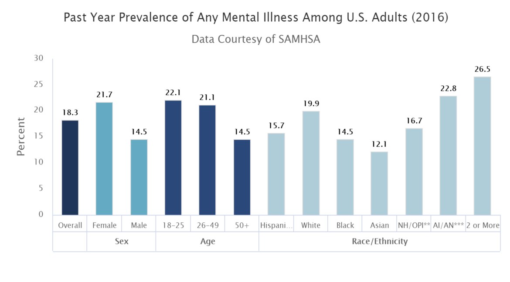
My Role
I was the UX designer in a five person team along with three UX researcher and another UX designer. I was responsible for concept mock-ups, wireframes, and visual design.
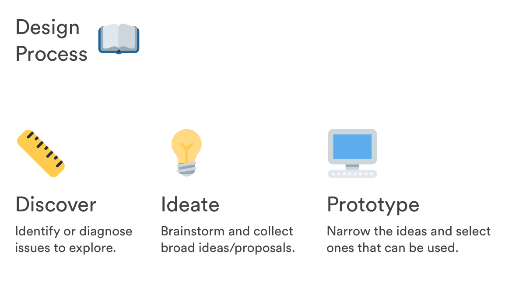
Optimize the journey
Previously, if people feel stressful, they tend to avoid addressing the stressors. They rather avoid it than dealing with the issues, creating a vicious cycle. Our design aims to resolve this issues.
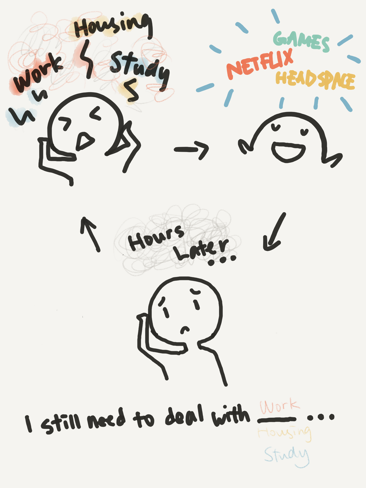
white space
The Challenge
Product Objectives
• Mental wellness is often neglected and the issues that affect stress are not actively addressed by individuals
My Challenge
• Identify and communicate “when to do what and why” with my team
• Proactively seek out resources to complete the project
• Present and iterate design recommendations based on feedback from my team and stakeholders
User Research
Online Research
To start, we looked for resources such as online documents, data, and participants.
Interviews & Observations
We aimed to identify the potential profile user group and find pain points and design opportunities in this phase of the process. A set of interview questions was devised to be used as a standard framework for each of the interviews. We each conducted them separately across the UC San Diego campus. My group and I incorporated the interview techniques we learned before, which was the master/apprentice model. We let the interviewee really lead the talking. The goal for the interview was to gather insights on each individual’s attitude and solution towards stress.
We gained meaningful data from our interviewees. We learned from the therapists about the importance of self-reflection. They concluded that people don’t spend enough time for themselves to examine how and what they are feeling. We also interviewed college students and several young professionals to learn about their insights. We found that people are able to acknowledge that they are stressed but many of them tend to ignore and not spend time to scan themselves how they feel.
Competitor Analysis
We found that mental illness is a serious issues that is not addressed enough. Also, there are products that can help relieve stress but some do not actively address stressors.
As a result, we hoped to guide people to acknowledge the stressors and tackle on it.
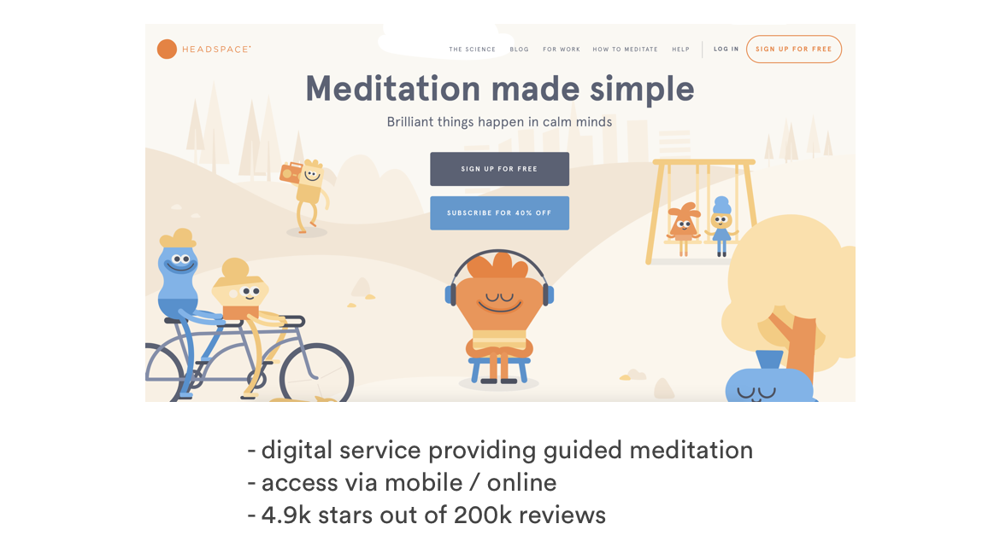
Persona
We developed user persona based on our interview data. We found that our primary users would be young adults. They faced many stress while not having a optimal solution. Our secondary users would be people who actively seek ways to improve health and address stressors.
Due to the limitation of an accessible user base and the source of quantitative research, the assumption of being able to apply this persona to a wider usage needs to be verified.
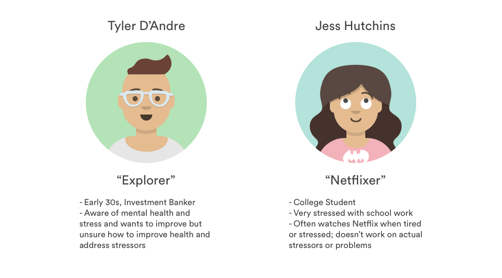
IDEAtion
We followed double-diamond design process model. Firstly, we thought of different solutions of the problem space.
Storyboard
We then visualize those ideas by storyboards.
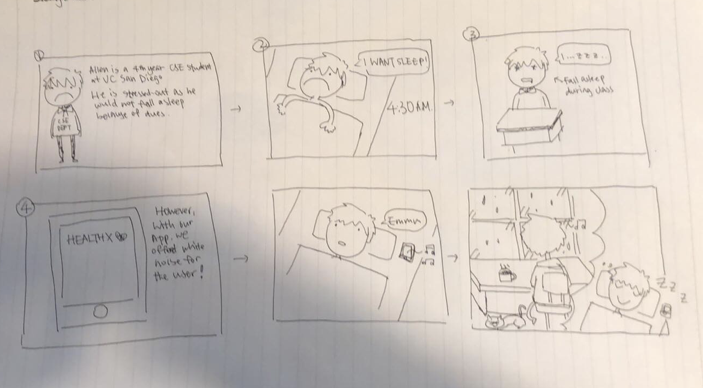
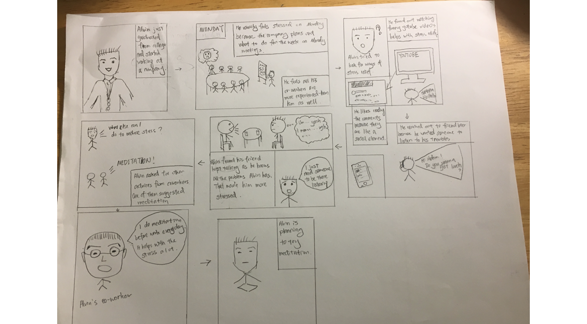
Moodboard
After brainstorming time we converged on our ideas and narrowed them into ones that were feasible. We then finalized our moodboard.
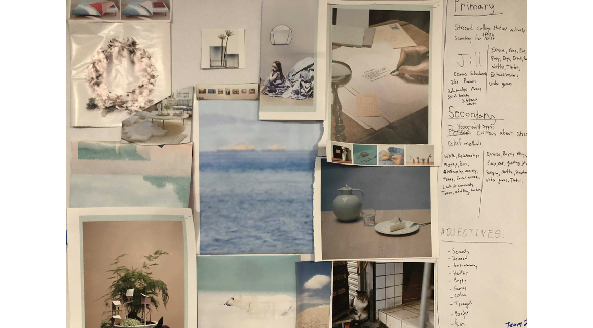
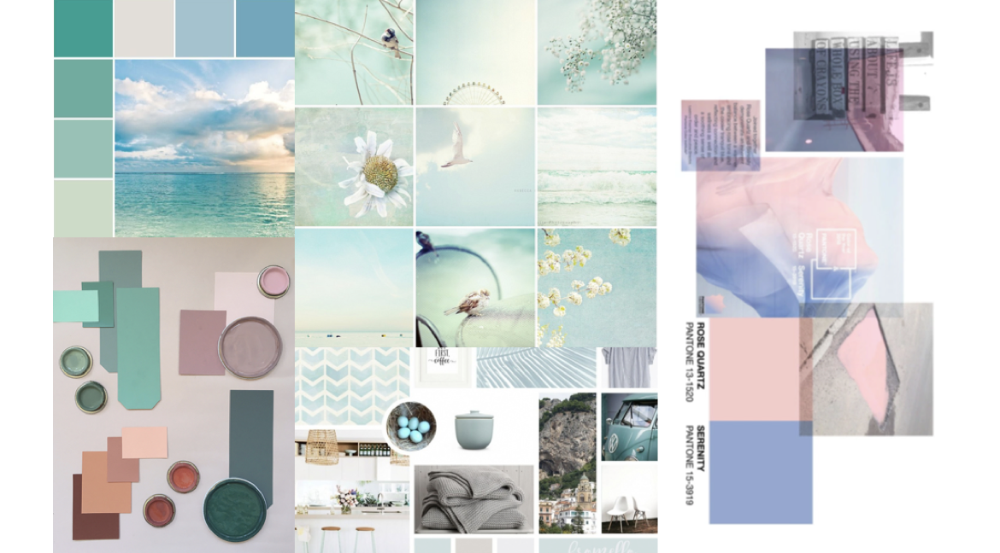
Cardboard Prototyping
Finally, we started some cardboard prototyping! In this process we synthesized our interview data and refining our design concepts.
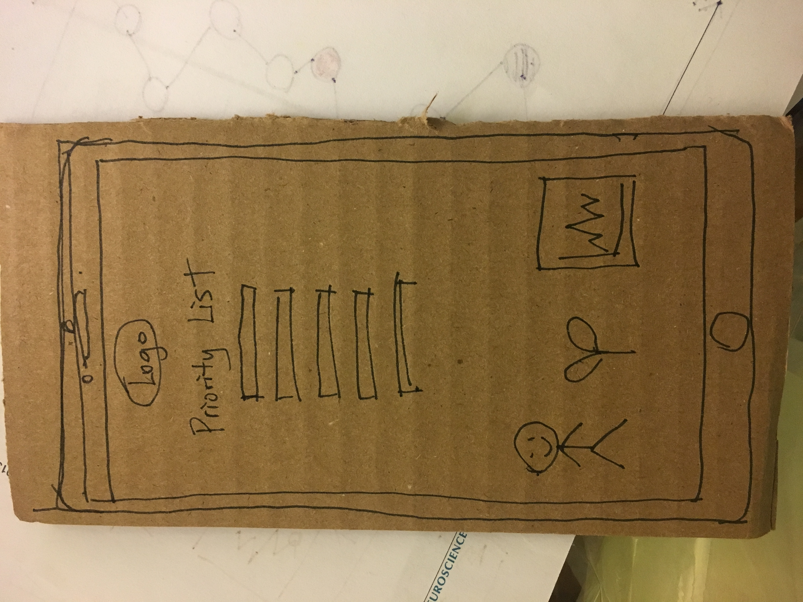
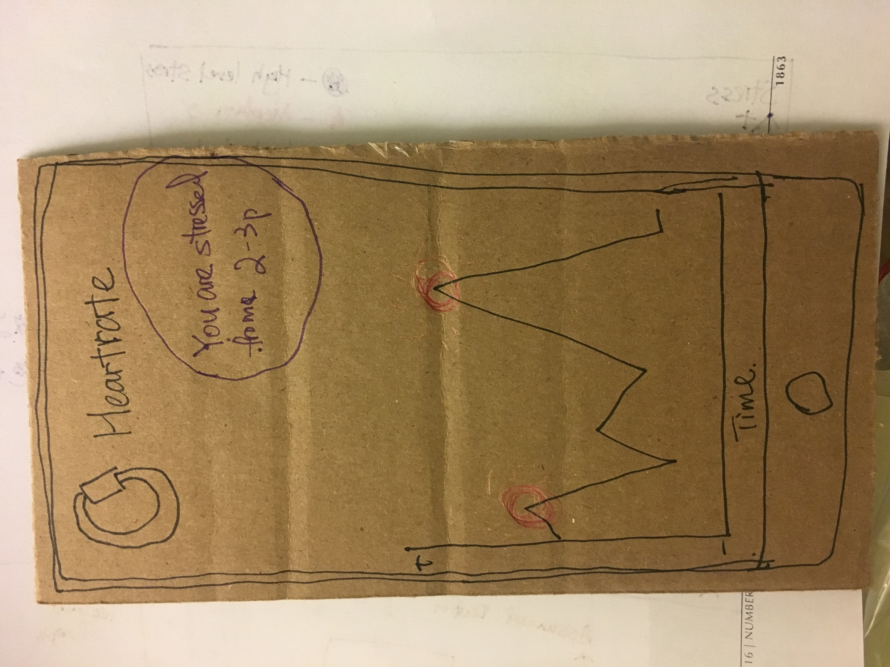
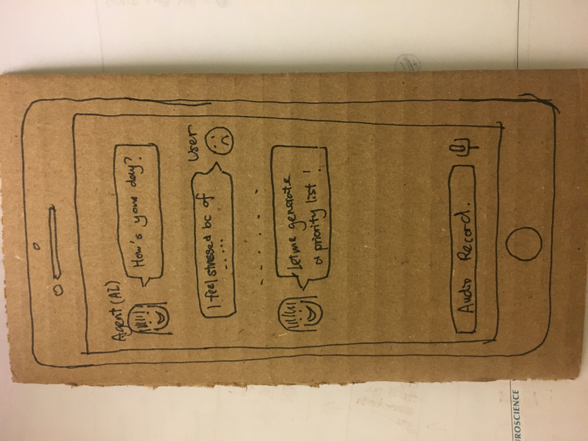
white space
Pilot Test
We did two rounds of pilot test with our potential users. We ran the test with low-fidelity paper prototype so that we were able to make any quick changes. However, we were not able to implement any animation in this case, which could be less user-friendly. During this process we were able to know if our workflow was streamlined from users' perspective. We also learned that we were missing some screens that our user needed.
I also found that we had to explain to our user in every step, which indicated the fact that our app was not user-friendly enough at that time. Based on the testing results, we made several iterations on our prototype.
Goal
We came up with a conceptual solution of creating a mobile application that aid people in actively addressing their stressor through daily activity tracking and self-reflection.
We also thought about integrating sensors and other interactive technologies to aid our user. We used the Spire Mindfulness and Activity Tracker from Apple as to keep track of how our user is doing. We decided to have an agent for our user. The agent would take advantages of machine learning to perform needfinding with users. Our agent would learn from users' words/voice input by Natural Language Processing and generated a priority list for our user. In this way, the user would be able to know which stressor they should take care of first. Also, by the power of sensor, we could visualize the data and displayed a graph to our user.
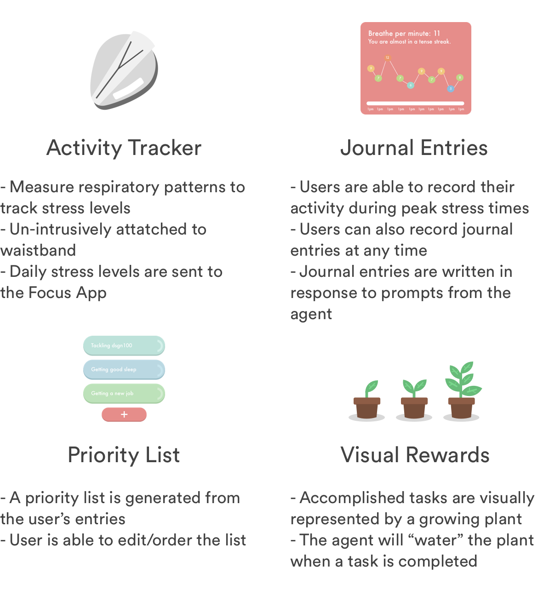
Design Language
In order to keep our design consistent, I developed a design style guide based on our moodboard. The guide loosely defined our typography, colors and icon spacing. I considered this as the foundation for guiding our work in a unified direction while allowing room for us to individually explore creative design solutions. We also established a few principles to guide us with these individual designs:
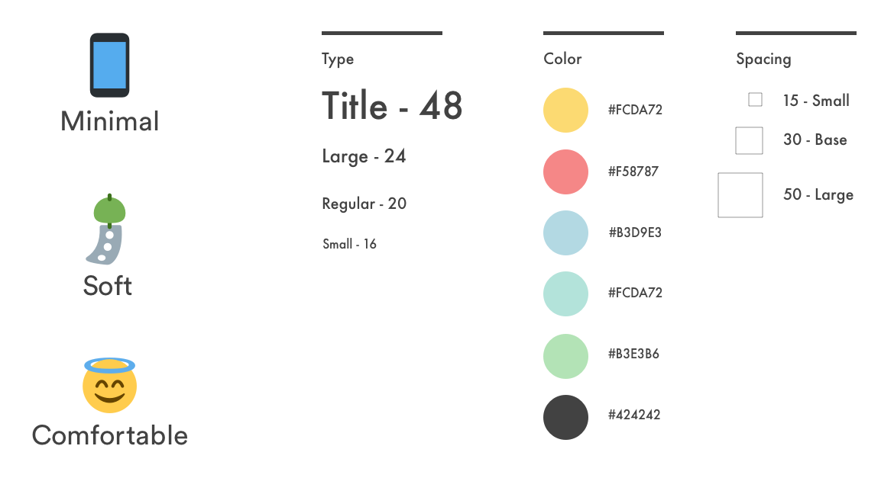
Initial Iteration
We came up with high-fidelity mockups after our pilot test. Here are a few interfaces that I made for our app by Sketch. I designed all illustrations the workflow based on the data we had.
Improvements made:
• Interactive splash screen animation
• Onboarding screens to guide first time user
• Loading screens during the synchronization between phone and tracker
• Allow both voice and written input as to make our user feel more comfortable open their mind
• Little reward feature: The agent will water the plant whenever the user finish a task
Final Prototype
User Testing
We tested our prototype on 4 different users as to garner feedback. From the feedback I realized that things that were intuitive to me were not clear enough for our users. We recorded the screen to better understand our users. We made another round of modification to our app based on those valuable feedback. Here is a subset of the feedback we got:
Likes
• The AI agent
• The design & color scheme
• "Everything feels very pleasant."
• "Tree thing is very creative, grows when you complete tasks."
Dislike
"Button placements issues. It is important that the flow should be intuitive so that I know where to press."
Confusions
• "Confusing that I am clicking on my own profile icon to chat with the AI. It feels like I’m talking to myself and not an agent."
• "Why is the login button on the top right of the screen?"
• "Confused about the loading screen. Why do I have to log in twice?"
• "Buttons and instructions can be made more easy to perceive."
How can I read more about how to complete these tasks?"
Showcase
We made a poster and pitch slide for our application!
Check out the slide here. It was an precious experience for our team to present our idea to all other talented designers and stakeholders!
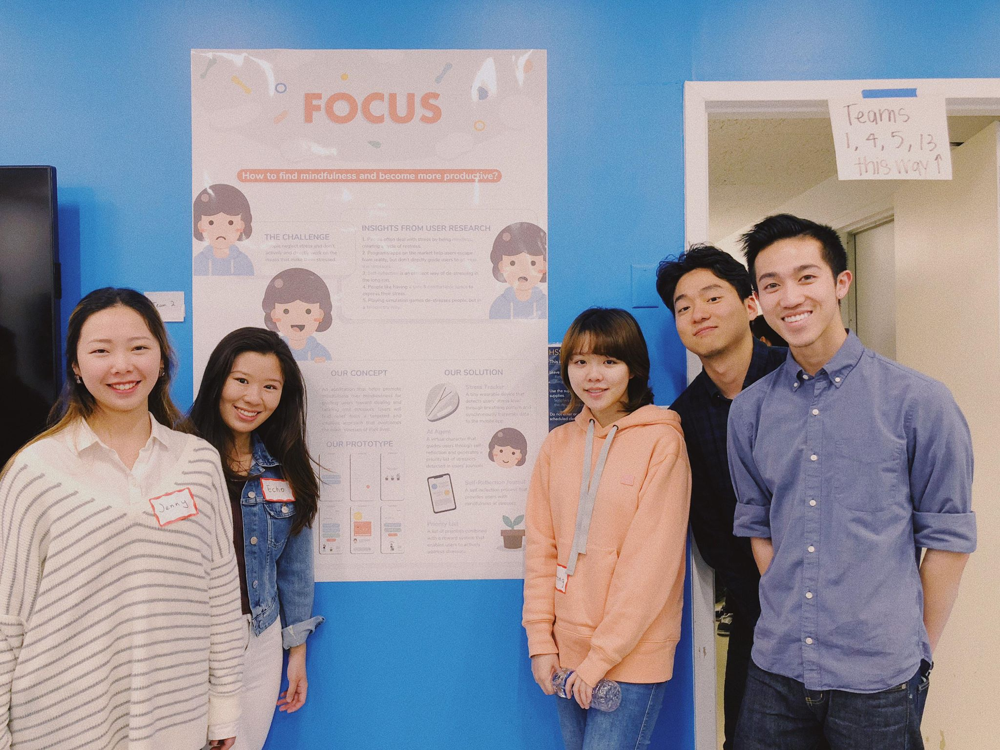
white space
Takeaways
Bringing up mindfulness for everyone will be a long way to go. For our app, a few improvements can be made if we have more time. The chat experience can be improved by redesign the chatting screen. Since most of the users had trouble understood our animation/loading screen on InVison, I would like to make animation by Framer for those processes. InVison was not able to handle logic issues. We would like to have different set of screens for first-time users and other users as we had a set of tutorial screens for our first-time users. Also, I would like to do empathy mapping for the user as to better understanding their needs.
Given the limited time and vast scope of our idea, it was challenging to focus on just one aspect of the solution. Also, it was hard to document the project as we did not take pictures of some artifacts. Anyway, constant communication with each other played a huge role in the success of this project. :)